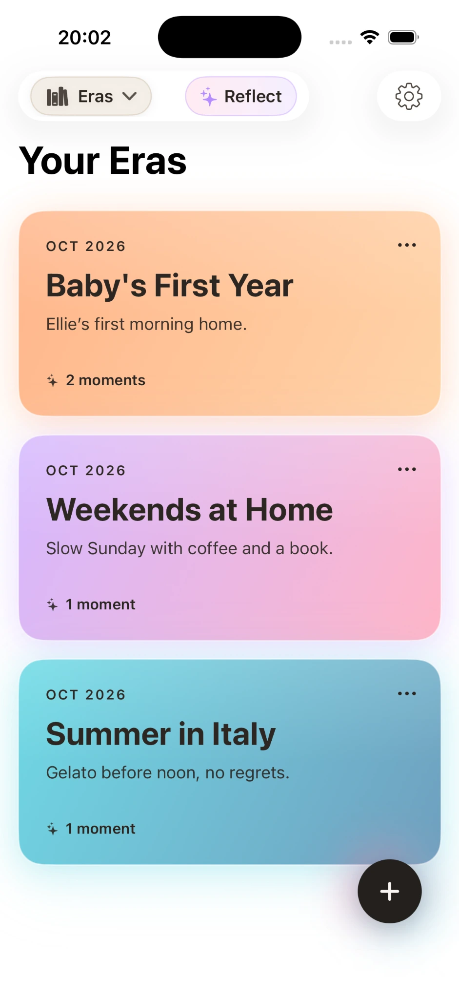
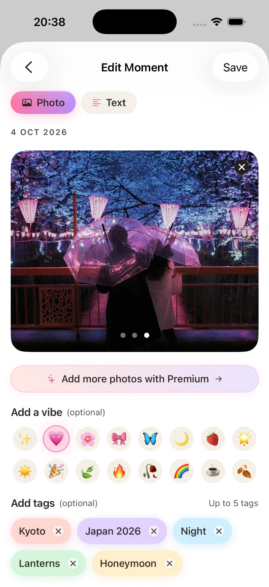
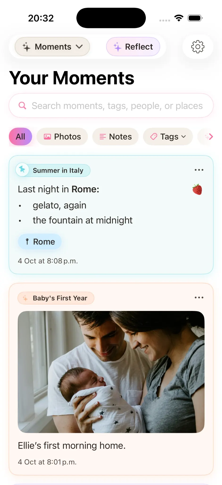
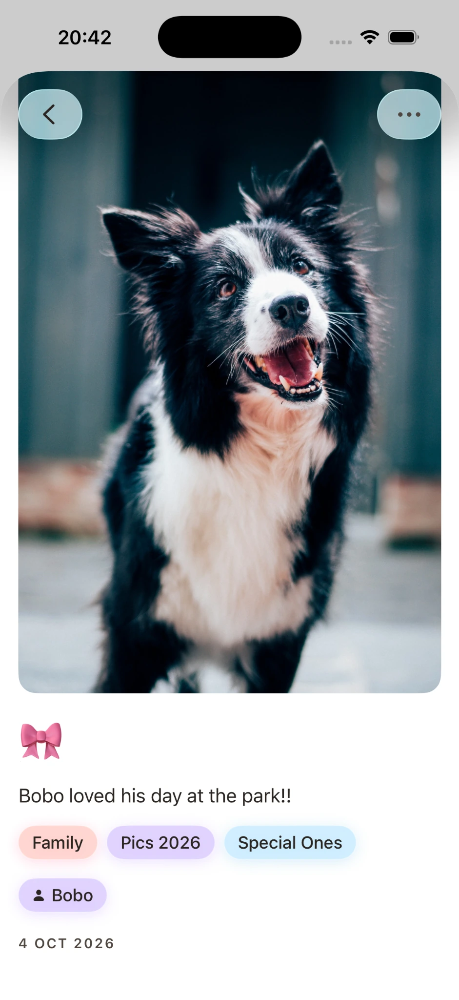

Rich-text stories
Stories can now use bold, italics and lists, giving longer memories and reflections more structure.
Current major release · Stillkeep v4
Stillkeep v4 expands the private photo journal with richer writing, stronger people-and-place context, new ways to filter a journal, and Reflect — a calmer way to look back across the shape of your story.
What’s new
A focused release summary based on the current App Store version.
Stories can now use bold, italics and lists, giving longer memories and reflections more structure.
Keep the people and places connected to each Moment, then use that context when browsing and filtering the journal.
Reflect offers a calm way to look back across the shape of your story over a chosen time range.
More cover styles give Eras additional visual identity while keeping the chapter-based structure simple.
Filter the journal more directly across photos, notes, people, places and tags to get back to a particular memory faster.
Version 4 also includes accessibility, performance and reliability improvements across the app.
Current interface
These screenshots show the current Eras, Moment editing, journal browsing and individual Moment views.




Stillkeep today
Stillkeep continues to organise journals around Eras and Moments, with photos, writing, people, places, vibes and tags kept together. It syncs through the user’s iCloud, has no ads, no tracking and no social feed, and is available in English, Japanese, Korean, Traditional Chinese, Brazilian Portuguese and Mexican Spanish.